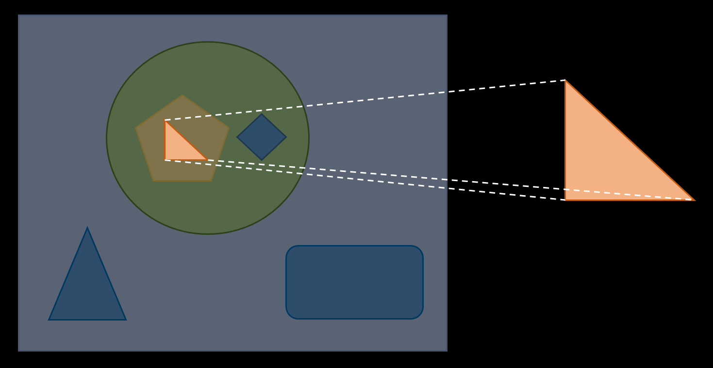

ch 3.
Immutable Data Operation
with Optics
References
Immutability
- Deterministic ➡️ same input, same output
- Pure Function ➡️ work over immutable data
- Easier to test
- Easier to trace
- Thread safety
Data Class
copy
data class Employee(val name: String, val id: String)
fun main() {
val employeeJack = Employee(name = "Jack", id = "1")
val employeeAnotherJack = employeeJack.copy(id = "2") // return a new instance instead of modifying it
println("$employeeJack") // Employee(name=Jack, id=1)
println("$employeeAnotherJack") // Employee(name=Jack, id=2)
}
Nested Data Class
Deep copy
data class Street(val number: Int, val name: String)
data class Address(val city: String, val street: Street)
data class Company(val name: String, val address: Address)
data class Employee(val name: String, val company: Company)
fun Employee.updateStreetName(newStreetName: String): Employee =
this.copy(
company = this.company.copy(
address = this.company.address.copy(
street = this.company.address.street.copy(
name = newStreetName
)
)
)
)
fun main() {
val john = Employee("John Doe", Company("Arrow", Address("Functional city", Street(23, "lambda street"))))
val johnInAlphaStreet = john.updateStreetName("alpha street")
println("$johnInAlphaStreet")
// Employee(name=John Doe, company=Company(name=Arrow, address=Address(city=Functional city, street=Street(number=23, name=alpha street))))
}
🔍 with Optics
import arrow.optics.optics
@optics data class Street(val number: Int, val name: String) { companion object }
@optics data class Address(val city: String, val street: Street) { companion object }
@optics data class Company(val name: String, val address: Address) { companion object }
@optics data class Employee(val name: String, val company: Company) { companion object }
fun Employee.updateStreetName(newStreetName: String): Employee =
Employee.company.address.street.name.set(this, newStreetName)
fun main() {
val john = Employee("John Doe", Company("Arrow", Address("Functional city", Street(23, "lambda street"))))
val johnInAlphaStreet = john.updateStreetName("alpha street")
println("$johnInAlphaStreet")
// Employee(name=John Doe, company=Company(name=Arrow, address=Address(city=Functional city, street=Street(number=23, name=alpha street))))
}
Copy Sealed Class
- There is NO
copymethod forsealed class
sealed class ContactInformation {
data class Email(val value: String) : ContactInformation()
data class HomeAddress(val street: String) : ContactInformation()
object Pigeon : ContactInformation()
sealed class Phone : ContactInformation() {
data class MobilePhone(val number: String) : Phone()
data class OfficePhone(val number: String) : Phone()
data class HomePhone(val number: String) : Phone()
}
}
data class UserProfile(val name: String, val contact: ContactInformation)
fun main() {
val joe = UserProfile(name = "Joe", contact = ContactInformation.Phone.MobilePhone("123456789"))
val joeWithNewPhone = joe.copy(contact = joe.contact.copy(ContactInformation.Phone.MobilePhone("987654321")))
// Unresolved reference: copy
}
…or need to do something horrible
fun main() {
val joe = UserProfile(name = "Joe", contact = ContactInformation.Phone.MobilePhone("123456789"))
val newPhone = when (joe.contact) {
is ContactInformation.Email -> joe.contact
is ContactInformation.Phone.MobilePhone -> ContactInformation.Phone.MobilePhone("987654321")
is ContactInformation.Phone.OfficePhone -> ContactInformation.Phone.MobilePhone("987654321")
is ContactInformation.Phone.HomePhone -> ContactInformation.Phone.MobilePhone("987654321")
is ContactInformation.HomeAddress -> joe.contact
is ContactInformation.Pigeon -> joe.contact
}
val joeWithNewPhone = joe.copy(contact = newPhone)
println(joeWithNewPhone) // UserProfile(name=Joe, contact=MobilePhone(number=987654321))
}
🔍 with Optics
import arrow.optics.optics
@optics
sealed class ContactInformation {
companion object {}
data class Email(val value: String) : ContactInformation()
data class HomeAddress(val street: String) : ContactInformation()
object Pigeon : ContactInformation()
@optics
sealed class Phone : ContactInformation() {
companion object {}
@optics data class MobilePhone(val number: String) : Phone() { companion object }
@optics data class OfficePhone(val number: String) : Phone() { companion object }
@optics data class HomePhone(val number: String) : Phone() { companion object }
}
}
@optics
data class UserProfile(val name: String, val contact: ContactInformation) { companion object }
fun main() {
val joe = UserProfile(name = "Joe", contact = ContactInformation.Phone.MobilePhone("123456789"))
val joeWithNewPhone = UserProfile.contact.set(joe, ContactInformation.Phone.MobilePhone("987654321"))
println(joeWithNewPhone) // UserProfile(name=Joe, contact=MobilePhone(number=987654321))
}
Optics
- provided by Arrow-kt
- DSL (Domain-Specific Language)
- ➡️ improve ease of use and readability
- Generated at compile time
- Direct and reusable syntax to read / modify immutable data structures
- ➡️ “modify” means copy and return a new instance
Arrow Optics

🔍 Focus means the target object

Optics
- Lens
- Prism
- Optional
- Traversal
- Every
- Iso
Lens
- Functional reference
- Focus into a structure and operate its focus
get➡️ get the focusset➡️ set the focus to input valuemodify➡️ update the focus with input function
import arrow.optics.Lens
data class UserProfile(val name: String)
val userProfileLens: Lens<UserProfile, String> = Lens(
get = { userProfile -> userProfile.name },
set = { userProfile, value -> userProfile.copy(name = value) }
)
fun main() {
val joe = UserProfile("Joe")
println(userProfileLens.get(joe)) // Joe
println(userProfileLens.set(joe, "Jack")) // UserProfile(name=Jack)
println(userProfileLens.modify(joe) { it.lowercase() }) // UserProfile(name=joe)
}
Prism
- See into a structure and optionally find its focus
getOrModify➡️ match the focusreverseGet➡️ get back to the source domain from the focus
- Mostly used for structures that have a relationship only under a certain condition
- ➡️ Copy method for
sealed class!
- ➡️ Copy method for
import arrow.core.left
import arrow.core.right
import arrow.optics.Prism
sealed class ContactInformation {
data class Email(val value: String) : ContactInformation()
object Pigeon : ContactInformation()
}
val contactInformationPrism: Prism<ContactInformation, ContactInformation.Email> = Prism(
getOrModify = { contactInformation ->
when (contactInformation) {
is ContactInformation.Email -> contactInformation.right()
else -> contactInformation.left()
}
},
reverseGet = { contactInformation -> contactInformation } // (::identity)
)
fun main() {
val contactInformation = ContactInformation.Email("joe@mail.com")
val newContactInformation = contactInformationPrism.modify(contactInformation) { email ->
email.copy(value = "newJoe@mail.com")
}
println(newContactInformation) // Email(value=newJoe@mail.com)
println(contactInformationPrism.getOrModify(ContactInformation.Pigeon)) // Either.Left(playground.ContactInformation$Pigeon@6537cf78)
println(contactInformationPrism.getOrModify(ContactInformation.Email("jack@mail.com"))) // Either.Right(Email(value=jack@mail.com))
println(contactInformationPrism.reverseGet(ContactInformation.Email("joe@mail.com"))) // Email(value=joe@mail.com)
}
How does reverseGet work ?
import arrow.core.compose
import arrow.core.left
import arrow.core.right
import arrow.optics.Prism
sealed class ContactInformation {
data class Email(val value: String) : ContactInformation()
object Pigeon : ContactInformation()
}
fun ContactInformation.Email.upperEmail(): String = this.value.uppercase()
val contactInformationPrism: Prism<ContactInformation, ContactInformation.Email> = Prism(
getOrModify = { contactInformation ->
when (contactInformation) {
is ContactInformation.Email -> contactInformation.right()
else -> contactInformation.left()
}
},
reverseGet = ContactInformation::Email compose ContactInformation.Email::upperEmail // (Email) -> (String) -> Email
)
fun main() {
val contactInformation = ContactInformation.Email("joe@mail.com")
val newContactInformation = contactInformationPrism.modify(contactInformation) { email ->
email.copy(value = "newJoe@mail.com")
}
println(newContactInformation) // Email(value=NEWJOE@MAIL.COM)
// Note the email value is uppercase!
// 1. modify(source: S, map: (A) -> B): T
// 2. reverseGet(focus: B): T
// chain 1. and 2., we get (A) -> (B) -> T, that's why the email value is uppercase
println(contactInformationPrism.getOrModify(ContactInformation.Pigeon)) // Either.Left(playground.ContactInformation$Pigeon@b97c004)
println(contactInformationPrism.getOrModify(ContactInformation.Email("jack@mail.com"))) // Either.Right(Email(value=jack@mail.com))
println(contactInformationPrism.reverseGet(ContactInformation.Email("joe@mail.com"))) // Email(value=JOE@MAIL.COM)
}
Optional
- Allow seeing into a structure and getting, setting, or modifying an optional focus
- Lens ➡️ getting, setting, or modifying
- Prism ➡️ an optional focus
🔍 Optional is composed of Lens and Prism
// val emailUpdated = when(contactInformation) {
// is ContactInformation.Email -> contactInformation.copy(value = "jack@mail.com")
// else -> contactInformation
// }
val emailOptional: Optional<ContactInformation, String> =
ContactInformation.email compose ContactInformation.Email.value
val emailOptional2: Optional<ContactInformation, String> =
ContactInformation.email.value
import arrow.optics.Optional
import arrow.optics.optics
@optics
sealed class ContactInformation {
companion object {}
@optics data class Email(val value: String) : ContactInformation() { companion object }
object Pigeon : ContactInformation()
}
fun main() {
val contactInformation = ContactInformation.Email("joe@mail.com")
val emailUpdated = when(contactInformation) {
is ContactInformation.Email -> contactInformation.copy(value = "jack@mail.com")
else -> contactInformation
}
val emailOptional: Optional<ContactInformation, String> =
ContactInformation.email compose ContactInformation.Email.value
val emailOptional2: Optional<ContactInformation, String> =
ContactInformation.email.value
println(emailUpdated) // Email(value=jack@mail.com)
println(emailOptional.set(contactInformation, "jack@mail.com")) // Email(value=jack@mail.com)
println(emailOptional.getOrModify(ContactInformation.Pigeon)) // Either.Left(playground.ContactInformation$Pigeon@5ae9a829)
println(emailOptional.getOrModify(ContactInformation.Email("jack@mail.com"))) // Either.Right(jack@mail.com)
println(emailOptional2.set(contactInformation, "jack@mail.com")) // Email(value=jack@mail.com)
println(emailOptional2.getOrModify(ContactInformation.Pigeon)) // Either.Left(playground.ContactInformation$Pigeon@5ae9a829)
println(emailOptional2.getOrModify(ContactInformation.Email("jack@mail.com"))) // Either.Right(jack@mail.com)
}
Traversal
- See into a structure and set, or modify 0 to N foci
- Focus into a structure that has 0 to N elements
- such as collections etc.
import arrow.optics.Traversal
fun main() {
val users = listOf("Joe", "Jack", "Mark", "Sam")
val traversalString = Traversal.list<String>()
val upperUsers = traversalString.modify(users) { it.uppercase() }
println(upperUsers) // [JOE, JACK, MARK, SAM]
}
Composed by Lens
import arrow.optics.Traversal
import arrow.optics.optics
@optics data class Street(val number: Int, val name: String) { companion object }
@optics data class Address(val city: String, val street: Street) { companion object }
@optics data class Company(val name: String, val address: Address) { companion object }
@optics data class Employee(val name: String, val company: Company) { companion object }
@optics data class Employees(val employees: List<Employee>) { companion object }
fun main() {
val employees = Employees(
listOf(
Employee("John", Company("Arrow", Address("Functional city", Street(23, "lambda street")))),
Employee("Jane", Company("Arrow", Address("Functional city", Street(23, "lambda street")))),
Employee("Mark", Company("Arrow", Address("Functional city", Street(23, "lambda street")))),
Employee("Sam", Company("Arrow", Address("Functional city", Street(23, "lambda street"))))
)
)
val employeeStreetName =
Employees.employees compose // (Employees) -> List<Employee>
Traversal.list() compose // (List<Employee>) -> Employee
Employee.company compose // (Employee) -> Company
Company.address compose // (Company) -> Address
Address.street compose // (Address) -> Street
Street.name // (Street) -> String
println(employeeStreetName.set(employees, "alpha street"))
// Employees(employees=[
// Employee(name=John, company=Company(name=Arrow, address=Address(city=Functional city, street=Street(number=23, name=alpha street)))),
// Employee(name=Jane, company=Company(name=Arrow, address=Address(city=Functional city, street=Street(number=23, name=alpha street)))),
// Employee(name=Mark, company=Company(name=Arrow, address=Address(city=Functional city, street=Street(number=23, name=alpha street)))),
// Employee(name=Sam, company=Company(name=Arrow, address=Address(city=Functional city, street=Street(number=23, name=alpha street))))
// ])
}
Every
- See into a structure and set, or modify 0 to N foci
- Focus into a structure that has 0 to N elements
- such as collections etc.
- Match over elements on a collection
Composed by Lens and Prism
import arrow.optics.Every
import arrow.optics.optics
@optics
sealed class ContactInformation {
companion object {}
@optics data class Email(val value: String) : ContactInformation() { companion object }
@optics data class HomeAddress(val street: String) : ContactInformation() { companion object }
object Pigeon : ContactInformation()
@optics
sealed class Phone : ContactInformation() {
companion object {}
@optics data class MobilePhone(val number: String) : Phone() { companion object }
@optics data class OfficePhone(val number: String) : Phone() { companion object }
@optics data class HomePhone(val number: String) : Phone() { companion object }
}
}
@optics data class UserProfile(val name: String, val contact: ContactInformation) { companion object }
@optics data class UserProfiles(val userProfiles: List<UserProfile>) { companion object }
fun main() {
val userProfiles = UserProfiles(
listOf(
UserProfile(name = "Joe", contact = ContactInformation.Email(value = "joe@mail.com")),
UserProfile(name = "Jack", contact = ContactInformation.Pigeon),
UserProfile(name = "Mark", contact = ContactInformation.HomeAddress(street = "lambda street")),
UserProfile(name = "Sam", contact = ContactInformation.Phone.MobilePhone(number = "123456789"))
)
)
val userMobilePhoneNumber = UserProfiles.userProfiles compose // (UserProfiles) -> List<UserProfile>
Every.list() compose // (List<UserProfile>) -> UserProfile
UserProfile.contact compose // (UserProfile) -> ContactInformation
ContactInformation.phone compose // (ContactInformation) -> Phone
ContactInformation.Phone.mobilePhone compose // (Phone) -> MobilePhone
ContactInformation.Phone.MobilePhone.number // (MobilePhone) -> String
println(userMobilePhoneNumber.set(userProfiles, "987654321"))
// UserProfiles(userProfiles=[
// UserProfile(name=Joe, contact=Email(value=joe@mail.com)),
// UserProfile(name=Jack, contact=playground.ContactInformation$Pigeon@4c70fda8),
// UserProfile(name=Mark, contact=HomeAddress(street=lambda street)),
// UserProfile(name=Sam, contact=MobilePhone(number=987654321))
// ])
}
🔍 Leverage DSL
import arrow.optics.Every
import arrow.optics.dsl.every
import arrow.optics.optics
@optics
sealed class ContactInformation {
companion object {}
@optics data class Email(val value: String) : ContactInformation() { companion object }
@optics data class HomeAddress(val street: String) : ContactInformation() { companion object }
object Pigeon : ContactInformation()
@optics
sealed class Phone : ContactInformation() {
companion object {}
@optics data class MobilePhone(val number: String) : Phone() { companion object }
@optics data class OfficePhone(val number: String) : Phone() { companion object }
@optics data class HomePhone(val number: String) : Phone() { companion object }
}
}
@optics data class UserProfile(val name: String, val contact: ContactInformation) { companion object }
@optics data class UserProfiles(val userProfiles: List<UserProfile>) { companion object }
fun main() {
val userProfiles = UserProfiles(
listOf(
UserProfile(name = "Joe", contact = ContactInformation.Email(value = "joe@mail.com")),
UserProfile(name = "Jack", contact = ContactInformation.Pigeon),
UserProfile(name = "Mark", contact = ContactInformation.HomeAddress(street = "lambda street")),
UserProfile(name = "Sam", contact = ContactInformation.Phone.MobilePhone(number = "123456789"))
)
)
// Leverage Every DSL
val userMobilePhoneNumber = UserProfiles.userProfiles.every(Every.list()).contact.phone.mobilePhone.number
println(userMobilePhoneNumber.set(userProfiles, "987654321"))
// UserProfiles(userProfiles=[
// UserProfile(name=Joe, contact=Email(value=joe@mail.com)),
// UserProfile(name=Jack, contact=playground.ContactInformation$Pigeon@4c70fda8),
// UserProfile(name=Mark, contact=HomeAddress(street=lambda street)),
// UserProfile(name=Sam, contact=MobilePhone(number=987654321))
// ])
}
Iso
- Define an isomorphism between a type
SandAdata classandPair/Triple/TupleN
- Invertible optic
import arrow.optics.Iso
data class User(val name: String, val id: String)
fun main() {
val userIsoPair: Iso<User, Pair<String, String>> = Iso(
get = { user -> user.name to user.id },
reverseGet = { (a, b) -> User(a, b) }
)
val user = User("Joe", "111")
println(user) // User(name=Joe, id=111)
val pairUser = userIsoPair.get(user)
println(pairUser) // (Joe, 111)
val reversePairUser = userIsoPair.reverseGet(pairUser)
println(reversePairUser) // User(name=Joe, id=111)
}
Generated by @optics
import arrow.optics.optics
@optics data class User(val name: String, val id: String) { companion object }
fun main() {
val user = User("Joe", "111")
println(user) // User(name=Joe, id=111)
val pairUser = User.iso.get(user)
println(pairUser) // (Joe, 111)
val reversePairUser = User.iso.reverseGet(pairUser)
println(reversePairUser) // User(name=Joe, id=111)
}
🔍 Compose with other optics
import arrow.optics.Every
import arrow.optics.dsl.every
import arrow.optics.optics
@optics
sealed class ContactInformation {
companion object {}
@optics data class Email(val value: String) : ContactInformation() { companion object }
@optics data class HomeAddress(val street: String) : ContactInformation() { companion object }
object Pigeon : ContactInformation()
@optics
sealed class Phone : ContactInformation() {
companion object {}
@optics data class MobilePhone(val model: String, val number: String) : Phone() { companion object }
@optics data class OfficePhone(val model: String, val number: String) : Phone() { companion object }
@optics data class HomePhone(val model: String, val number: String) : Phone() { companion object }
}
}
@optics data class UserProfile(val name: String, val contact: ContactInformation) { companion object }
@optics data class UserProfiles(val userProfiles: List<UserProfile>) { companion object }
fun main() {
val userProfiles = UserProfiles(
listOf(
UserProfile(name = "Joe", contact = ContactInformation.Email(value = "joe@mail.com")),
UserProfile(name = "Jack", contact = ContactInformation.Pigeon),
UserProfile(name = "Mark", contact = ContactInformation.HomeAddress(street = "lambda street")),
UserProfile(name = "Sam", contact = ContactInformation.Phone.MobilePhone(model = "Pixel5", number = "123456789")),
UserProfile(name = "Tim", contact = ContactInformation.Phone.OfficePhone(model = "SE125", number = "112379")),
UserProfile(name = "Hank", contact = ContactInformation.Phone.HomePhone(model = "XA950", number = "56431978"))
)
)
val userMobilePhone = UserProfiles.userProfiles
.every(Every.list())
.contact
.phone
.mobilePhone
.compose(ContactInformation.Phone.MobilePhone.iso)
println(userMobilePhone.getAll(userProfiles))
// [(Pixel5, 123456789)]
println(userMobilePhone.set(userProfiles, Pair("Sony Xperia", "123456789")))
// UserProfiles(userProfiles=[
// UserProfile(name=Joe, contact=Email(value=joe@mail.com)),
// UserProfile(name=Jack, contact=playground.ContactInformation$Pigeon@57fffcd7),
// UserProfile(name=Mark, contact=HomeAddress(street=lambda street)),
// UserProfile(name=Sam, contact=MobilePhone(model=Sony Xperia, number=123456789)),
// UserProfile(name=Tim, contact=OfficePhone(model=SE125, number=112379)),
// UserProfile(name=Hank, contact=HomePhone(model=XA950, number=56431978))
// ])
}
Recap #1
- Immutability
- Deep copy in nested
data class - NO copy method for
sealed class
- Deep copy in nested
@Optics- Solved above problems
- DSL for highly composable and reusable
- Generated at compile time
Recap #2
- Lens, Prism ➡️ compose to Optional
- Traversl, Every ➡️ for collections
- Iso ➡️ isomorphism between
data classandTupleN